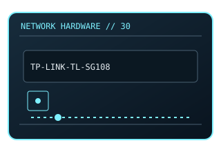

[ MODEL-SPECIFIC NETWORK HARDWARE ]
TP-Link TL-SG108 8-Port Gigabit Desktop Switch
Eight-port metal-case unmanaged Gigabit Ethernet switch. This entry uses the labeled manufacturer model identifier and cites primary product/support documentation.

MODEL IDENTIFICATION: Match the complete model/part number and hardware revision on the item label to manufacturer documentation. Do not apply this entry to near-name variants.
Exact specifications and compatibility
| Cataloged model | TP-Link TL-SG108 8-Port Gigabit Desktop Switch |
|---|---|
| Dedicated subcategory | Unmanaged switches |
| Bus / host interface | Standalone switch powered by external adapter. |
| Ports / physical interfaces | 8 × 10/100/1000BASE-T; no PoE output. |
| PHY, radio or protocol | Unmanaged Layer 2 switching; auto-negotiation. |
| PoE | No PoE input or PoE output is documented for this product. |
| Link-rate vs throughput | Gigabit per port maximum link rate; aggregate forwarding capacity is distinct from application payload. Link rates are nominal negotiated/PHY specifications, not measured application throughput; no measured specimen result is claimed. |
| Firmware / driver support | No driver or user-managed firmware; hardware-version product support is revision specific. |
| Compatibility checks | Confirm exact TL-SG108 variant and input adapter; do not confuse with TL-SG108PE managed PoE model. |
Model-specific notes
TL-SG108 has no management interface or PoE.
Primary manufacturer sources
- TP-Link TL-SG108 official specificationsManufacturer product specification or documentation for the exact model/family.
- Manufacturer support and compatibility resourcesFirmware, driver, compatibility, revision or support details; applicability may depend on the exact hardware revision and region.
Vendor maximum rates are not test results. Confirm regional variants, hardware revision and current support status with the manufacturer.